Khu trưng bày
Khu trưng bày là hệ thống trang trí dài hạn, đóng vai trò mục tiêu ngoài màn chơi.
Mô tả
- Khu trưng bày là hệ thống trang trí dài hạn, đóng vai trò mục tiêu ngoài màn chơi.
- Có 14 khu theo chủ đề, mở đầu là Cung điện đáy biển và kết thúc là Thế giới băng tuyết, đi qua các chủ đề như Trại đáy biển, Thị trấn đáy biển, Công viên nước, Rạp chiếu phim, Nông trại, Xưởng kịch và Bảo tàng.
- Mỗi khu chứa từ 5 tới 13 công trình, tổng cộng 147 công trình.
- Người chơi mua từng công trình bằng một loại tiền riêng gọi là tick, giá từ 10 tới 60.
- Mở khu trưng bày: Người chơi thấy khu của mình
- Mua một công trình: Công trình xuất hiện trong khu
- Đổi khu và đổi nền màn chơi: Diện mạo phần chơi chính thay đổi theo khu đang chọn
Lưu ý
Ảnh chụp màn hình (5)
Chụp trực tiếp từ game đang chạy: 2026-10-06 · LDPlayer 9 · Android 9 · 1080×1920 · máy ảo PHM110 · v1.4111 (cài từ Google Play ngày 12/09/2026) · tài khoản test JadeGill, đang ở level 4. Bấm ảnh để phóng to, dùng phím ← → để chuyển ảnh.

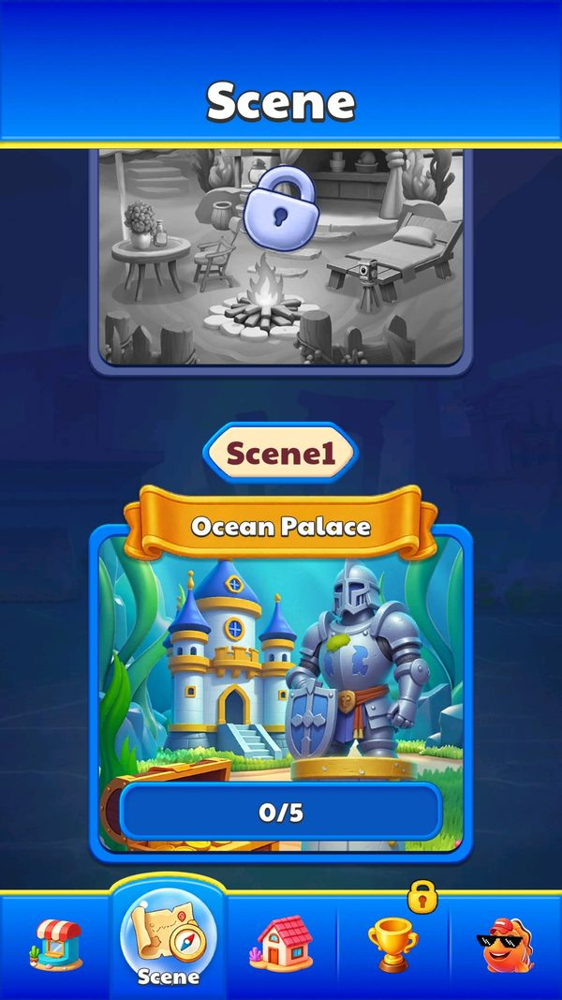

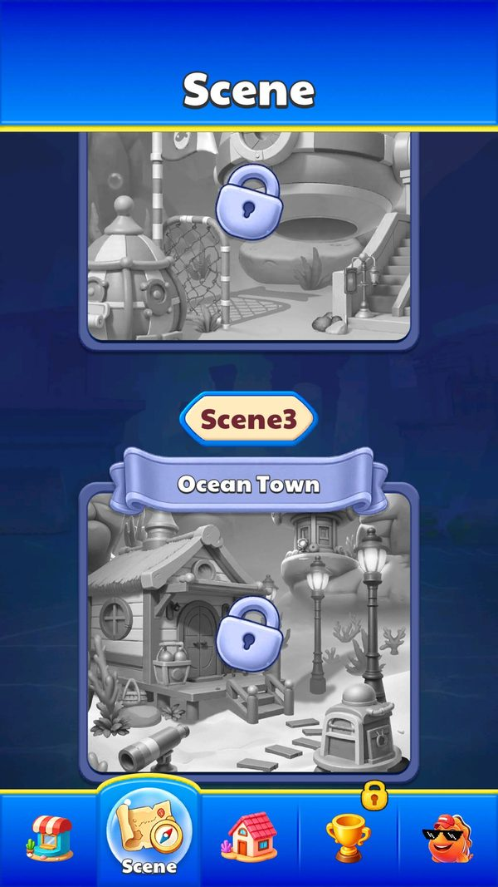

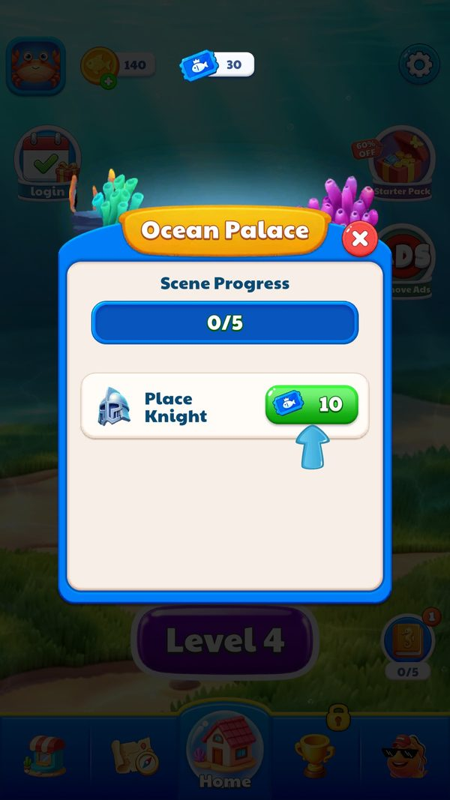

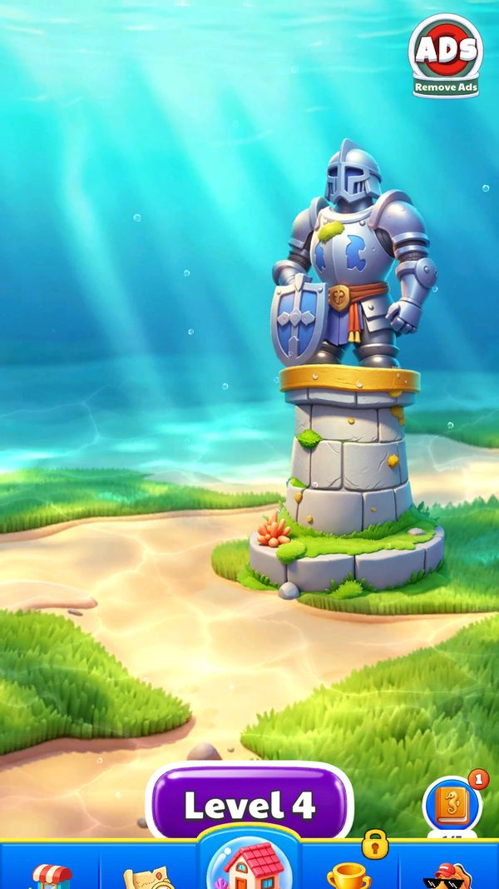

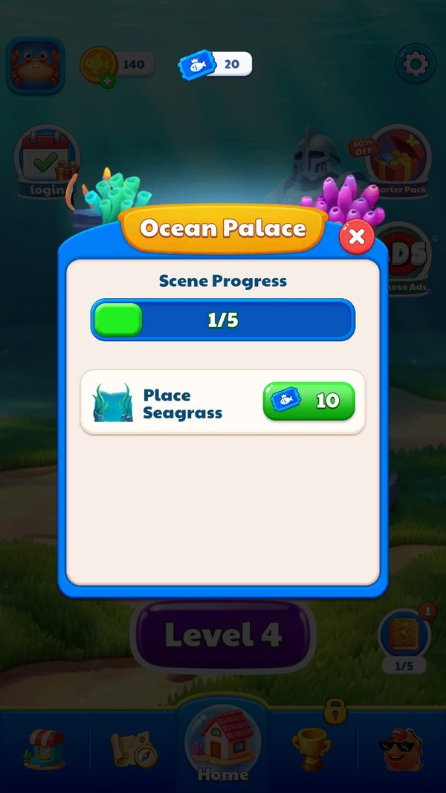
Mở khóa & điểm vào
Khu 1 là mặc định theo cờ IsDefault. Tham số server IsShowExhibition điều khiển việc hiển thị mục này.
Điểm vào:
- Nút khu trưng bày ở UIPanelHomeBottom
- UIPanelArchitecture khi chọn một công trình
Cách hoạt động
- ExhibitionConfig định nghĩa 14 khu với ExhibitionId, khoá dịch tên, icon, tên prefab và hai ảnh nền màn chơi.
- ExhibitionArchitectureConfig định nghĩa 147 công trình với ExhibitionId, ArchitectureId, RootName, ArchitectureGroup từ 1 tới 8, icon, khoá dịch tên, giá Tick và tên âm thanh riêng.
- ExhibitionData chỉ lưu ExhibitionId đang xem và danh sách ArchitectureIds đã mua, đúng hai trường.
- Khi mua, tickCount giảm và công trình hiện lên trong prefab của khu.
- Trạng thái này nằm trong payload cloud save nên đồng bộ được giữa các máy.
Luồng chi tiết theo code
ExhibitionConfig định nghĩa 14 khu với ExhibitionId, khoá dịch tên, icon, tên prefab và hai ảnh nền màn chơi. ExhibitionArchitectureConfig định nghĩa 147 công trình với ExhibitionId, ArchitectureId, RootName, ArchitectureGroup từ 1 tới 8, icon, khoá dịch tên, giá Tick và tên âm thanh riêng. ExhibitionData chỉ lưu ExhibitionId đang xem và danh sách ArchitectureIds đã mua, đúng hai trường. Khi mua, tickCount giảm và công trình hiện lên trong prefab của khu. Trạng thái này nằm trong payload cloud save nên đồng bộ được giữa các máy.
Số liệu chính
| Chỉ số | Giá trị | Nguồn |
|---|---|---|
| ExhibitionConfig 14 khu | 1 Cung điện đáy biển mặc định; 2 Trại đáy biển; 3 Thị trấn đáy biển; 4 Lạc viên đáy biển; 5 Chợ đáy biển; 6 Công viên nước; 7 Rừng rậm đáy biển; 8 Sân khấu nhạc chìm; 9 Sân chơi; 10 Rạp chiếu phim; 11 Nông trại; 12 Xư... | AssetRes/Configs/Default/ExhibitionConfig.json |
| ExhibitionArchitectureConfig | số công trình mỗi khu từ 5 tới 13, nhiều nhất là khu 10 với 13 công trình, ít nhất là khu 1 với 5; ArchitectureGroup từ 1 tới 8 | AssetRes/Configs/Default/ExhibitionArchitectureConfig.json |
| EXHIBITION_DATA_KEY_2 | ExhibitionId 1, ArchitectureIds rỗng | PlayerPrefs |
| IsShowExhibition | property của SDKManager, chưa thấy khoá online tương ứng trong lần bắt log | SDKManager |
| Giá công trình khu 1 | 10 vé cá mỗi công trình | ExhibitionArchitectureConfig.Tick + ảnh chụp |
Use case (3)
Bấm vào từng use case để mở. Mở/đóng tất cả
UC-01 Mở khu trưng bày
Các bước- UIPanelExhibition.OnShow
- Nạp prefab theo ExhibitionConfig.Prefab
- Hiển thị các công trình đã mua theo ExhibitionData.ArchitectureIds
| Actor | Player |
|---|---|
| Trigger | Bấm nút khu trưng bày |
| Điều kiện | IsShowExhibition bật |
| Kết quả | Người chơi thấy khu của mình |
| Evidence | UIPanelExhibition; ExhibitionConfig.Prefab; ExhibitionData.ArchitectureIds |
UC-02 Mua một công trình
Các bước- UIPanelArchitecture hiện thông tin và giá
- Trừ tickCount
- Thêm ArchitectureId vào ExhibitionData.ArchitectureIds
- Phát âm thanh riêng của công trình
| Actor | Player |
|---|---|
| Trigger | Chọn công trình chưa có |
| Điều kiện | Đủ tick |
| Kết quả | Công trình xuất hiện trong khu |
| Quy tắc / số liệu | Giá Tick phân bố: 30 tick ở 46 công trình, 40 ở 40, 20 ở 31, 50 ở 16, 60 ở 10, 10 ở 4 |
| Evidence | ExhibitionArchitectureConfig.Tick; ExhibitionArchitectureConfig.Sound; UIPanelArchitecture |
UC-03 Đổi khu và đổi nền màn chơi
Các bước- ExhibitionData.ExhibitionId đổi
- Màn chơi dùng LevelBg và LevelBgMask của khu mới
| Actor | Player |
|---|---|
| Trigger | Chuyển sang khu khác |
| Điều kiện | Khu đã mở |
| Kết quả | Diện mạo phần chơi chính thay đổi theo khu đang chọn |
| Evidence | ExhibitionConfig.LevelBg; ExhibitionConfig.LevelBgMask; ExhibitionData.ExhibitionId |
Cấu hình (7)
Gộp mọi nguồn: const trong code, JSON mặc định trong Resources, bảng static, storage key, AB test, cờ server.
| Nguồn | Key | Kiểu | Giá trị | Ý nghĩa | Nơi định nghĩa |
|---|---|---|---|---|---|
| json default | ExhibitionConfig 14 khu | bảng | 1 Cung điện đáy biển mặc định; 2 Trại đáy biển; 3 Thị trấn đáy biển; 4 Lạc viên đáy biển; 5 Chợ đáy biển; 6 Công viên nước; 7 Rừng rậm đáy biển; 8 Sân khấu nhạc chìm; 9 Sân chơi; 10 Rạp chiếu phim; 11 Nông trại; 12 Xưởng kịch; 13 Bảo tàng; 14 Thế giới băng tuyết | Danh mục khu trưng bày | AssetRes/Configs/Default/ExhibitionConfig.json |
| json default | ExhibitionArchitectureConfig | bảng 147 dòng | số công trình mỗi khu từ 5 tới 13, nhiều nhất là khu 10 với 13 công trình, ít nhất là khu 1 với 5; ArchitectureGroup từ 1 tới 8 | Danh mục công trình và giá | AssetRes/Configs/Default/ExhibitionArchitectureConfig.json |
| storage key | EXHIBITION_DATA_KEY_2 | json | ExhibitionId 1, ArchitectureIds rỗng | Khu đang xem và danh sách công trình đã mua | PlayerPrefs |
| server info | IsShowExhibition | bool | property của SDKManager, chưa thấy khoá online tương ứng trong lần bắt log | Bật tắt mục khu trưng bày | SDKManager |
| runtime LDPlayer 06/10/2026 | Tiền tệ xây công trình | currency | Vé cá 10003 (Tick = số vé) | Icon trên nút đặt công trình trùng icon vé cá | ảnh chụp screenshots/exhibition_place_knight.jpg |
| runtime LDPlayer 06/10/2026 | Khu 1 Ocean Palace | observed | 5 công trình, Knight 10 vé, Seagrass 10 vé; EXHIBITION_DATA_KEY_2 = ExhibitionId 1, ArchitectureIds [1] sau khi đặt | Tiến độ khu | facts/runtime/decoded/playerprefs_2026-10-06.json |
| runtime LDPlayer 06/10/2026 | Tự bật panel khu trưng bày | rule | Mỗi lần về Home từ màn chơi | Khớp tham số backhome 1_1_6_0 | ảnh chụp screenshots/levelend_back_home_exhibition.jpg |
Bảng config gốc trong APK
ExhibitionConfig.json – 14 khu
AssetRes/Configs/Default/ExhibitionConfig.json · 14 dòng.
| ExhibitionId | Name_Localization | Icon | Prefab | LevelBg | LevelBgMask | IsDefault |
|---|---|---|---|---|---|---|
| 1 | 海底宫殿Ocean Palace | exhibition_hall_illustration_1_1 | Exhibition_1 | bg_level_1 | bg_level_1_1 | ✔ |
| 2 | 海底营地Ocean Camp | 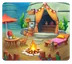 exhibition_hall_illustration_1_2 | Exhibition_2 | bg_level_2 | bg_level_2_1 | |
| 3 | 海底小镇Ocean Town | 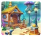 exhibition_hall_illustration_1_3 | Exhibition_3 | bg_level_3 | bg_level_3_1 | |
| 4 | 海底乐园Ocean Paradise | exhibition_hall_illustration_1_4 | Exhibition_4 | bg_level_4 | bg_level_4_1 | |
| 5 | 海底市集Ocean Market | 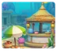 exhibition_hall_illustration_1_5 | Exhibition_5 | bg_level_5 | bg_level_5_1 | |
| 6 | 水上乐园Water Park | 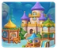 exhibition_hall_illustration_1_6 | Exhibition_6 | bg_level_6 | bg_level_6_1 | |
| 7 | 海底丛林Aqua Jungle | 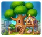 exhibition_hall_illustration_1_7 | Exhibition_7 | bg_level_7 | bg_level_7_1 | |
| 8 | 海底音乐台Sunken Music Stage | 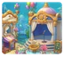 exhibition_hall_illustration_1_8 | Exhibition_8 | bg_level_8 | bg_level_8_1 | |
| 9 | 游乐场Playground | 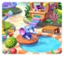 exhibition_hall_illustration_1_9 | Exhibition_9 | bg_level_9 | bg_level_9_1 | |
| 10 | 电影院Movie Theater | 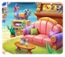 exhibition_hall_illustration_1_10 | Exhibition_10 | bg_level_10 | bg_level_10_1 | |
| 11 | 农场Farm | 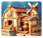 exhibition_hall_illustration_1_11 | Exhibition_11 | bg_level_11 | bg_level_11_1 | |
| 12 | 话剧制片厂Drama Studio | 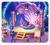 exhibition_hall_illustration_1_12 | Exhibition_12 | bg_level_12 | bg_level_12_1 | |
| 13 | 博物馆Museum | 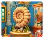 exhibition_hall_illustration_1_14 | Exhibition_14 | bg_level_14 | bg_level_14_1 | |
| 14 | 冰雪世界Snowy Realm | exhibition_hall_illustration_1_13 | Exhibition_13 | bg_level_13 | bg_level_13_1 |
ExhibitionArchitectureConfig.json – 147 công trình (147 dòng)
Tick là giá tính bằng vé cá (10003): nút đặt công trình dùng đúng icon vé cá và số vé giảm 30 → 20 sau khi đặt Knight. AssetRes/Configs/Default/ExhibitionArchitectureConfig.json · 147 dòng.
| ExhibitionId | ArchitectureId | RootName | ArchitectureGroup | ArchitectureIcon | ArchitectureName_Localization | Tick | Sound |
|---|---|---|---|---|---|---|---|
| 1 | 1 | 1 | 1 | home_settlement_bg_1_1 | 骑士Knight | 10 | Sound_Architecture_1_1 |
| 1 | 2 | 5 | 2 | home_settlement_bg_1_5 | 海草Seagrass | 10 | Sound_Architecture_1_5 |
| 1 | 3 | 2 | 3 | 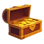 home_settlement_bg_1_2 | 宝藏Treasure | 20 | Sound_Architecture_1_2 |
| 1 | 4 | 4 | 4 | home_settlement_bg_1_4 | 珊瑚Coral | 20 | Sound_Architecture_1_4 |
| 1 | 5 | 3 | 5 | home_settlement_bg_1_3 | 城堡Castle | 30 | Sound_Architecture_1_3 |
| 2 | 1 | 1 | 1 | 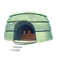 home_settlement_bg_2_1 | 石屋Stone Cottage | 40 | Sound_Architecture_2_1 |
| 2 | 2 | 2 | 2 | home_settlement_bg_2_2 | 窗帘Curtains | 20 | Sound_Architecture_2_2 |
| 2 | 3 | 3 | 2 | 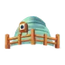 home_settlement_bg_2_3 | 石屋顶Stone Roof | 30 | Sound_Architecture_2_3 |
| 2 | 4 | 4 | 3 | home_settlement_bg_2_4 | 伞Umbrella | 40 | Sound_Architecture_2_4 |
| 2 | 5 | 5 | 4 | home_settlement_bg_2_5 | 桌子Table | 30 | Sound_Architecture_2_5 |
| 2 | 6 | 7 | 4 | 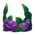 home_settlement_bg_2_7 | 花簇Flower Bush | 20 | Sound_Architecture_2_7 |
| 2 | 7 | 6 | 5 | 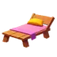 home_settlement_bg_2_6 | 小床Small Bed | 40 | Sound_Architecture_2_6 |
| 2 | 8 | 8 | 5 | home_settlement_bg_2_8 | 栏杆Railings | 30 | Sound_Architecture_2_8 |
| 2 | 9 | 10 | 5 | 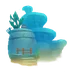 home_settlement_bg_2_10 | 礁屋Reef Hut | 20 | Sound_Architecture_2_10 |
| 2 | 10 | 9 | 6 | home_settlement_bg_2_9 | 篝火Bonfire | 40 | Sound_Architecture_2_9 |
| 3 | 1 | 1 | 1 | 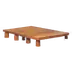 home_settlement_bg_3_1 | 地板Flooring | 20 | Sound_Architecture_3_1 |
| 3 | 2 | 2 | 2 | 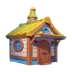 home_settlement_bg_3_2 | 木屋Log Cabin | 50 | Sound_Architecture_3_2 |
| 3 | 3 | 3 | 2 | 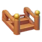 home_settlement_bg_3_3 | 木梯Wooden Ladder | 30 | Sound_Architecture_3_3 |
| 3 | 4 | 4 | 3 | 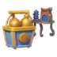 home_settlement_bg_3_4 | 工具箱Toolbox | 20 | Sound_Architecture_3_4 |
| 3 | 5 | 11 | 3 | home_settlement_bg_3_11 | 石塔Stone Tower | 40 | Sound_Architecture_3_11 |
| 3 | 6 | 5 | 4 | 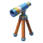 home_settlement_bg_3_5 | 望远镜Telescope | 30 | Sound_Architecture_3_5 |
| 3 | 7 | 6 | 4 | 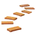 home_settlement_bg_3_6 | 木阶Wooden Steps | 40 | Sound_Architecture_3_6 |
| 3 | 8 | 8 | 4 | home_settlement_bg_3_8 | 海草Seagrass | 30 | Sound_Architecture_3_8 |
| 3 | 9 | 7 | 5 | home_settlement_bg_3_7 | 机台Console | 40 | Sound_Architecture_3_7 |
| 3 | 10 | 10 | 5 | 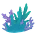 home_settlement_bg_3_10 | 珊瑚Coral | 20 | Sound_Architecture_3_10 |
| 3 | 11 | 12 | 5 | home_settlement_bg_3_12 | 礁石Reef | 30 | Sound_Architecture_3_12 |
| 3 | 12 | 9 | 6 | 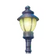 home_settlement_bg_3_9 | 路灯Streetlamp | 40 | Sound_Architecture_3_9 |
| 4 | 1 | 2 | 1 | home_settlement_bg_4_2 | 汽车Car | 40 | Sound_Architecture_4_2 |
| 4 | 2 | 3 | 1 | 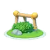 home_settlement_bg_4_3 | 木架Wooden Rack | 30 | Sound_Architecture_4_3 |
| 4 | 3 | 1 | 2 | 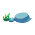 home_settlement_bg_4_1 | 岩石Rock | 20 | Sound_Architecture_4_1 |
| 4 | 4 | 4 | 2 | 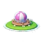 home_settlement_bg_4_4 | 彩球Colorful Balls | 30 | Sound_Architecture_4_4 |
| 4 | 5 | 5 | 3 | 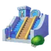 home_settlement_bg_4_5 | 梯台Platform | 40 | Sound_Architecture_4_5 |
| 4 | 6 | 9 | 3 | 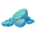 home_settlement_bg_4_9 | 石丘Mound | 30 | Sound_Architecture_4_9 |
| 4 | 7 | 6 | 4 | home_settlement_bg_4_6 | 帐篷Tent | 60 | Sound_Architecture_4_6 |
| 4 | 8 | 8 | 5 | home_settlement_bg_4_8 | 飞船Spaceship | 40 | Sound_Architecture_4_8 |
| 4 | 9 | 7 | 6 | home_settlement_bg_4_7 | 圆舱Pod | 60 | Sound_Architecture_4_7 |
| 4 | 10 | 10 | 6 | 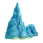 home_settlement_bg_4_10 | 假山Rockery | 30 | Sound_Architecture_4_10 |
| 5 | 1 | 1 | 1 | home_settlement_bg_5_1 | 石藻Stonewort | 30 | Sound_Architecture_5_1 |
| 5 | 2 | 3 | 1 | 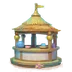 home_settlement_bg_5_3 | 草亭Grass Pavilion | 60 | Sound_Architecture_5_3 |
| 5 | 3 | 2 | 2 | 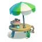 home_settlement_bg_5_2 | 伞桌Umbrella Table | 40 | Sound_Architecture_5_2 |
| 5 | 4 | 7 | 2 | home_settlement_bg_5_7 | 石堆Rock Pile | 40 | Sound_Architecture_5_7 |
| 5 | 5 | 4 | 3 | home_settlement_bg_5_4 | 绿丛Green Bush | 30 | Sound_Architecture_5_4 |
| 5 | 6 | 5 | 4 | 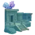 home_settlement_bg_5_5 | 石墩Stone Pillar | 40 | Sound_Architecture_5_5 |
| 5 | 7 | 6 | 4 | 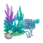 home_settlement_bg_5_6 | 海藻Kelp | 20 | Sound_Architecture_5_6 |
| 5 | 8 | 8 | 5 | home_settlement_bg_5_8 | 石柱Stone Column | 50 | Sound_Architecture_5_8 |
| 6 | 1 | 1 | 1 | home_settlement_bg_6_1 | 青草Green Grass | 20 | Sound_Architecture_6_1 |
| 6 | 2 | 8 | 1 | 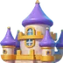 home_settlement_bg_6_8 | 碉堡Bunker | 60 | Sound_Architecture_6_8 |
| 6 | 3 | 7 | 2 | home_settlement_bg_6_7 | 戏水亭Splash Pavilion | 40 | Sound_Architecture_6_7 |
| 6 | 4 | 5 | 3 | home_settlement_bg_6_5 | 小椰子树Mini Coconut Tree | 30 | Sound_Architecture_6_5 |
| 6 | 5 | 6 | 3 | 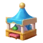 home_settlement_bg_6_6 | 浪梯Wave Slide | 50 | Sound_Architecture_6_6 |
| 6 | 6 | 4 | 4 | home_settlement_bg_6_4 | 滩亭Beach Pavilion | 50 | Sound_Architecture_6_4 |
| 6 | 7 | 2 | 5 | home_settlement_bg_6_2 | 嬉水池Wading Pool | 40 | Sound_Architecture_6_2 |
| 6 | 8 | 3 | 6 | home_settlement_bg_6_3 | 休息区Lounge Area | 30 | Sound_Architecture_6_3 |
| 6 | 9 | 9 | 6 | home_settlement_bg_6_9 | 岩石堆Stone Pile | 40 | Sound_Architecture_6_9 |
| 7 | 1 | 10 | 1 | home_settlement_bg_7_10 | 树屋台Treehouse Deck | 40 | Sound_Architecture_7_10 |
| 7 | 2 | 7 | 2 | 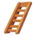 home_settlement_bg_7_7 | 栖阁Cozy Perch | 30 | Sound_Architecture_7_7 |
| 7 | 3 | 9 | 2 | home_settlement_bg_7_9 | 大树Big Tree | 60 | Sound_Architecture_7_9 |
| 7 | 4 | 5 | 3 | home_settlement_bg_7_5 | 茶桌Tea Table | 30 | Sound_Architecture_7_5 |
| 7 | 5 | 6 | 3 | 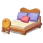 home_settlement_bg_7_6 | 乘凉床Daybed | 30 | Sound_Architecture_7_6 |
| 7 | 6 | 8 | 3 | home_settlement_bg_7_8 | 木屋Log Cabin | 50 | Sound_Architecture_7_8 |
| 7 | 7 | 2 | 4 | 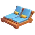 home_settlement_bg_7_2 | 乘凉椅Lounge Chair | 40 | Sound_Architecture_7_2 |
| 7 | 8 | 11 | 4 | 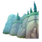 home_settlement_bg_7_11 | 岩丘Rock Hill | 30 | Sound_Architecture_7_11 |
| 7 | 9 | 1 | 5 | home_settlement_bg_7_1 | 草丛Algae | 20 | Sound_Architecture_7_1 |
| 7 | 10 | 4 | 5 | home_settlement_bg_7_4 | 糖果摊Candy Stall | 30 | Sound_Architecture_7_4 |
| 7 | 11 | 3 | 6 | home_settlement_bg_7_3 | 饰台Display Stand | 40 | Sound_Architecture_7_3 |
| 8 | 1 | 7 | 1 | home_settlement_bg_8_7 | 舞台Stage | 30 | Sound_Architecture_8_7 |
| 8 | 2 | 8 | 2 | 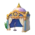 home_settlement_bg_8_8 | 舞台帐篷Stage Tent | 60 | Sound_Architecture_8_8 |
| 8 | 3 | 1 | 3 | home_settlement_bg_8_1 | 藻岩Algae Rock | 30 | Sound_Architecture_8_1 |
| 8 | 4 | 2 | 3 | 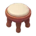 home_settlement_bg_8_2 | 观众席Seating Area | 50 | Sound_Architecture_8_2 |
| 8 | 5 | 3 | 3 | 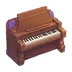 home_settlement_bg_8_3 | 钢琴Piano | 40 | Sound_Architecture_8_3 |
| 8 | 6 | 4 | 4 | 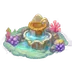 home_settlement_bg_8_4 | 喷泉Fountain | 40 | Sound_Architecture_8_4 |
| 8 | 7 | 6 | 4 | home_settlement_bg_8_6 | 告示牌Signboard | 20 | Sound_Architecture_8_6 |
| 8 | 8 | 10 | 5 | home_settlement_bg_8_10 | 拱门Archway | 40 | Sound_Architecture_8_10 |
| 8 | 9 | 11 | 5 | home_settlement_bg_8_11 | 音乐城Music City | 50 | Sound_Architecture_8_11 |
| 8 | 10 | 5 | 6 | home_settlement_bg_8_5 | 提琴亭Violin Pavilion | 30 | Sound_Architecture_8_5 |
| 8 | 11 | 9 | 6 | home_settlement_bg_8_9 | 气球Balloons | 40 | Sound_Architecture_8_9 |
| 9 | 1 | 10 | 1 | home_settlement_bg_9_10 | 假山Rockery | 20 | Sound_Architecture_9_10 |
| 9 | 2 | 11 | 2 | home_settlement_bg_9_11 | 过山车Roller Coaster | 40 | Sound_Architecture_9_11 |
| 9 | 3 | 9 | 3 | home_settlement_bg_9_9 | 大树Big Tree | 30 | Sound_Architecture_9_9 |
| 9 | 4 | 8 | 3 | home_settlement_bg_9_8 | 草地Seaweed | 20 | Sound_Architecture_9_8 |
| 9 | 5 | 4 | 3 | home_settlement_bg_9_4 | 灌木丛Bushes | 20 | Sound_Architecture_9_4 |
| 9 | 6 | 1 | 4 | home_settlement_bg_9_1 | 滑滑梯Slide | 60 | Sound_Architecture_9_1 |
| 9 | 7 | 6 | 4 | home_settlement_bg_9_6 | 跷跷板Seesaw | 40 | Sound_Architecture_9_6 |
| 9 | 8 | 7 | 4 | home_settlement_bg_9_7 | 泳池Swimming Pool | 50 | Sound_Architecture_9_7 |
| 9 | 9 | 2 | 5 | home_settlement_bg_9_2 | 蹦床Trampoline | 50 | Sound_Architecture_9_2 |
| 9 | 10 | 3 | 5 | home_settlement_bg_9_3 | 餐车Food Truck | 40 | Sound_Architecture_9_3 |
| 9 | 11 | 5 | 6 | home_settlement_bg_9_5 | 板凳Bench | 30 | Sound_Architecture_9_5 |
| 10 | 1 | 1 | 1 | home_settlement_bg_10_1 | 地板Flooring | 30 | Sound_Architecture_10_1 |
| 10 | 2 | 2 | 2 | home_settlement_bg_10_2 | 墙Wall | 30 | Sound_Architecture_10_2 |
| 10 | 3 | 3 | 3 | home_settlement_bg_10_3 | 海藻Kelp | 20 | Sound_Architecture_10_3 |
| 10 | 4 | 9 | 4 | home_settlement_bg_10_9 | 金色街机Golden Arcade Machine | 60 | Sound_Architecture_10_9 |
| 10 | 5 | 8 | 4 | home_settlement_bg_10_8 | 粉色街机Pink Arcade Machine | 40 | Sound_Architecture_10_8 |
| 10 | 6 | 7 | 5 | home_settlement_bg_10_7 | 灰色街机Gray Arcade Machine | 40 | Sound_Architecture_10_7 |
| 10 | 7 | 6 | 5 | home_settlement_bg_10_6 | 放映机Film Projector | 50 | Sound_Architecture_10_6 |
| 10 | 8 | 11 | 6 | home_settlement_bg_10_11 | 草坪Lawn | 20 | Sound_Architecture_10_11 |
| 10 | 9 | 12 | 7 | home_settlement_bg_10_12 | 沙发Sofa | 30 | Sound_Architecture_10_12 |
| 10 | 10 | 10 | 7 | home_settlement_bg_10_10 | 凳子Stool | 30 | Sound_Architecture_10_10 |
| 10 | 11 | 13 | 7 | home_settlement_bg_10_13 | 桌子Table | 30 | Sound_Architecture_10_13 |
| 10 | 12 | 4 | 8 | home_settlement_bg_10_4 | 海草Seagrass | 20 | Sound_Architecture_10_4 |
| 10 | 13 | 5 | 8 | home_settlement_bg_10_5 | 吊灯Chandelier | 30 | Sound_Architecture_10_5 |
| 11 | 1 | 1 | 1 | home_settlement_bg_11_1 | 草堆Haystack | 20 | Sound_Architecture_11_1 |
| 11 | 2 | 2 | 1 | home_settlement_bg_11_2 | 农家小屋Farmhouse | 50 | Sound_Architecture_11_2 |
| 11 | 3 | 7 | 1 | home_settlement_bg_11_7 | 木栏杆Wooden Fence | 20 | Sound_Architecture_11_7 |
| 11 | 4 | 3 | 2 | home_settlement_bg_11_3 | 储蓄仓Silo | 40 | Sound_Architecture_11_3 |
| 11 | 5 | 8 | 2 | home_settlement_bg_11_8 | 杂草Weeds | 10 | Sound_Architecture_11_8 |
| 11 | 6 | 10 | 3 | home_settlement_bg_11_10 | 南瓜Pumpkin | 20 | Sound_Architecture_11_10 |
| 11 | 7 | 9 | 3 | home_settlement_bg_11_9 | 运输车Delivery Truck | 60 | Sound_Architecture_11_9 |
| 11 | 8 | 4 | 4 | home_settlement_bg_11_4 | 大风车Windmill | 30 | Sound_Architecture_11_4 |
| 11 | 9 | 11 | 5 | home_settlement_bg_11_11 | 木桶堆Wooden Barrels | 20 | Sound_Architecture_11_11 |
| 11 | 10 | 5 | 6 | home_settlement_bg_11_5 | 树Tree | 30 | Sound_Architecture_11_5 |
| 11 | 11 | 12 | 6 | home_settlement_bg_11_12 | 花盆Flowerpot | 30 | Sound_Architecture_11_12 |
| 11 | 12 | 6 | 7 | home_settlement_bg_11_6 | 拖拉机Tractor | 50 | Sound_Architecture_11_6 |
| 12 | 1 | 1 | 1 | home_settlement_bg_12_1 | 舞台Stage | 50 | Sound_Architecture_12_1 |
| 12 | 2 | 11 | 1 | home_settlement_bg_12_11 | 花坛Flowerbed | 20 | Sound_Architecture_12_11 |
| 12 | 3 | 3 | 2 | home_settlement_bg_12_3 | 道具Item | 30 | Sound_Architecture_12_3 |
| 12 | 4 | 12 | 2 | home_settlement_bg_12_12 | 奖杯Trophy | 40 | Sound_Architecture_12_12 |
| 12 | 5 | 8 | 2 | home_settlement_bg_12_8 | 摄影机Camera | 20 | Sound_Architecture_12_8 |
| 12 | 6 | 2 | 3 | home_settlement_bg_12_2 | 背景Background | 50 | Sound_Architecture_12_2 |
| 12 | 7 | 9 | 3 | home_settlement_bg_12_9 | 节目表Show Schedule | 20 | Sound_Architecture_12_9 |
| 12 | 8 | 6 | 4 | home_settlement_bg_12_6 | 衣柜Wardrobe | 30 | Sound_Architecture_12_6 |
| 12 | 9 | 10 | 4 | home_settlement_bg_12_10 | 化妆台Vanity | 30 | Sound_Architecture_12_10 |
| 12 | 10 | 4 | 5 | home_settlement_bg_12_4 | 补光灯Ring Light | 30 | Sound_Architecture_12_4 |
| 12 | 11 | 7 | 5 | home_settlement_bg_12_7 | 收纳箱Storage Box | 10 | Sound_Architecture_12_7 |
| 12 | 12 | 5 | 6 | home_settlement_bg_12_5 | 吊灯Chandelier | 40 | Sound_Architecture_12_5 |
| 13 | 1 | 1 | 1 | home_settlement_bg_14_1 | 展示台Display Pedestal | 40 | Sound_Architecture_14_1 |
| 13 | 2 | 12 | 1 | home_settlement_bg_14_12 | 盆栽Potted Plant | 30 | Sound_Architecture_14_12 |
| 13 | 3 | 2 | 2 | home_settlement_bg_14_2 | 菊石Ammonite | 50 | Sound_Architecture_14_2 |
| 13 | 4 | 3 | 2 | home_settlement_bg_14_3 | 围栏柱Stanchion | 20 | Sound_Architecture_14_3 |
| 13 | 5 | 4 | 2 | home_settlement_bg_14_4 | 吊灯Chandelier | 30 | Sound_Architecture_14_4 |
| 13 | 6 | 5 | 3 | home_settlement_bg_14_5 | 贝壳标本Seashell Specimen | 40 | Sound_Architecture_14_5 |
| 13 | 7 | 11 | 3 | home_settlement_bg_14_11 | 书籍推车Book Cart | 30 | Sound_Architecture_14_11 |
| 13 | 8 | 6 | 4 | home_settlement_bg_14_6 | 潜水盔Diving Helmet | 40 | Sound_Architecture_14_6 |
| 13 | 9 | 8 | 4 | home_settlement_bg_14_8 | 珊瑚标本Coral Specimen | 30 | Sound_Architecture_14_8 |
| 13 | 10 | 9 | 5 | home_settlement_bg_14_9 | 隔离柱Fence Post | 20 | Sound_Architecture_14_9 |
| 13 | 11 | 10 | 5 | home_settlement_bg_14_10 | 沙发Sofa | 30 | Sound_Architecture_14_10 |
| 13 | 12 | 7 | 6 | home_settlement_bg_14_7 | 潜艇Submarine | 40 | Sound_Architecture_14_7 |
| 14 | 1 | 1 | 1 | home_settlement_bg_13_1 | 积雪木屋Snowy Cabin | 60 | Sound_Architecture_13_1 |
| 14 | 2 | 5 | 1 | home_settlement_bg_13_5 | 圣诞树Christmas Tree | 30 | Sound_Architecture_13_5 |
| 14 | 3 | 4 | 1 | home_settlement_bg_13_4 | 滑雪板Snowboard | 20 | Sound_Architecture_13_4 |
| 14 | 4 | 2 | 2 | home_settlement_bg_13_2 | 升级木屋Upgrade Cabin | 20 | Sound_Architecture_13_2 |
| 14 | 5 | 6 | 2 | home_settlement_bg_13_6 | 火炉Fireplace | 40 | Sound_Architecture_13_6 |
| 14 | 6 | 3 | 3 | home_settlement_bg_13_3 | 雪人Snowman | 30 | Sound_Architecture_13_3 |
| 14 | 7 | 7 | 4 | home_settlement_bg_13_7 | 休息椅Lounge Chair | 20 | Sound_Architecture_13_7 |
| 14 | 8 | 9 | 4 | home_settlement_bg_13_9 | 圣诞礼物Christmas Gift | 40 | Sound_Architecture_13_9 |
| 14 | 9 | 8 | 5 | home_settlement_bg_13_8 | 滑雪橇Sled | 40 | Sound_Architecture_13_8 |
| 14 | 10 | 10 | 5 | home_settlement_bg_13_10 | 冰雪城堡Ice Castle | 50 | Sound_Architecture_13_10 |
| 14 | 11 | 11 | 6 | home_settlement_bg_13_11 | 极光Aurora | 40 | Sound_Architecture_13_11 |
Tham số server (live)
Tham số online của SDK ZMYSDK (SDKManager.getOnlineConfigParams). Giá trị live đọc từ logcat ngày 12/09/2026; ô tô vàng là chỗ server ghi đè mặc định của client. Bảng đủ 17 khoá ở phụ lục sự kiện và facts/runtime/server-config.md.
| Khoá | Mặc định client | Live (server) | Property C# | Ý nghĩa |
|---|---|---|---|---|
backhome | 0_0_7_0 | 1_1_6_0 | IsBackHome, BackHomeLevel, 2 trường chưa rõ | Luồng quay về Home; quan sát: về Home sau khi thua thì panel Khu trưng bày tự bật |
Số liệu đo trên máy
Đo trên máy
| Hạng mục | Giá trị đo | Ghi chú |
|---|---|---|
| Tiền tệ xây công trình | Vé cá (10003) | icon trên nút trùng icon vé cá ở thanh trên |
| Giá Knight / Seagrass | 10 / 10 vé | khớp Tick ExhibitionId 1 |
| Số công trình khu 1 | 5 | "Scene Progress 1/5" |
| EXHIBITION_DATA_KEY_2 | ExhibitionId 1, ArchitectureIds [1] | save thật sau khi đặt Knight |
| Tự bật panel | mỗi lần về Home từ màn chơi | khớp backhome 1_1_6_0 |
Giao diện (UI)
| Element | Class | Mục đích |
|---|---|---|
| Khu trưng bày | UIPanelExhibition | Xem và trang trí |
| Chi tiết công trình | UIPanelArchitecture | Xem giá và mua |
Storage keys
EXHIBITION_DATA_KEY_2
Chưa đọc được / ghi chú
- Tick chính là vé cá 10003; nguồn kiếm vé ngoài thắng màn chưa xác định
- Không rõ điều kiện mở khu 2 tới 14
Tính năng liên quan
Nguồn đã đọc
- AssetRes/Configs/Default/ExhibitionConfig.json
- AssetRes/Configs/Default/ExhibitionArchitectureConfig.json
- features/UIPanelExhibition.md
- features/UIPanelArchitecture.md
- feature_extras.json
- screenshots/
- facts/runtime/decoded/playerprefs_2026-10-06.json